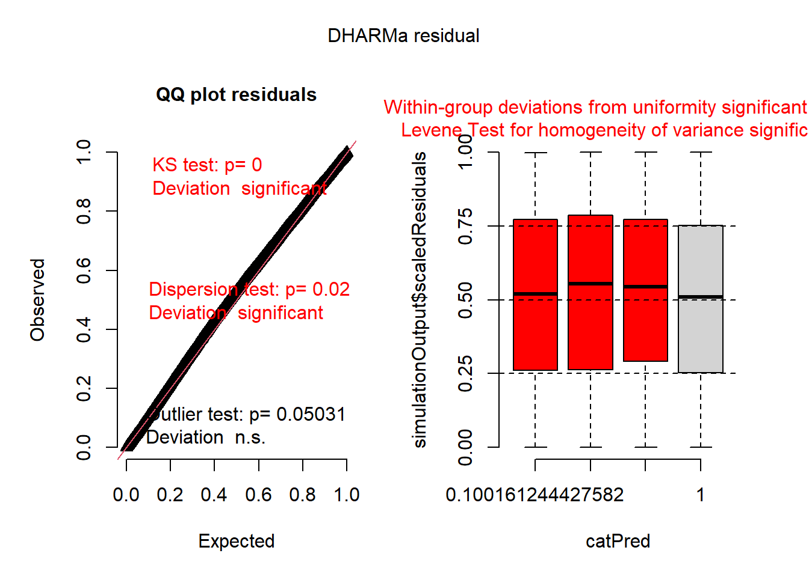
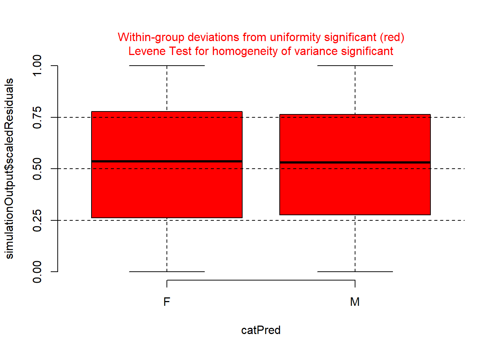
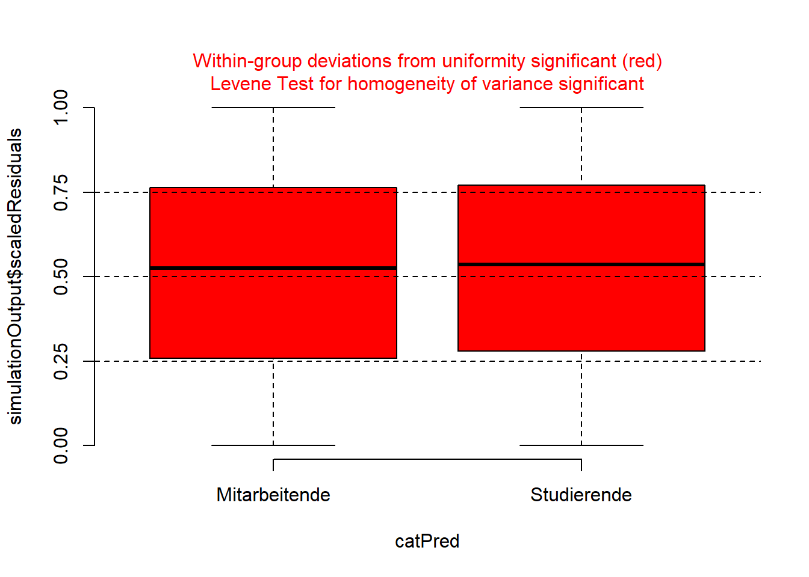
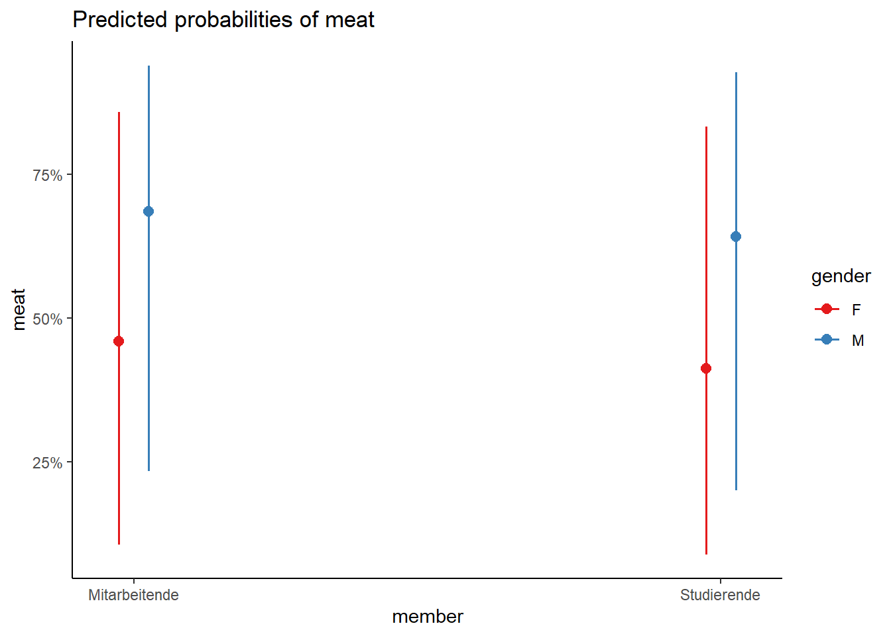

Im Forschungsprojekt NOVANIMAL wird u.a. der Frage nachgegangen, was es braucht, damit Menschen freiwillig weniger tierische Produkte konsumieren? Ein interessanter Ansatzpunkt ist die Ausser-Haus-Verpflegung. Gemäss der ersten in den Jahren 2014/2015 durchgeführten nationalen Ernährungserhebung menuCH essen 70 % der Bevölkerung zwischen 18 und 75 Jahren am Mittag auswärts (Bochud u. a. 2017). Daher rückt die Gastronomie als zentraler Akteur einer innovativen und nachhaltigen Ernährungswirtschaft ins Blickfeld. Welche Innovationen in der Gastronomie könnten dazu beitragen, den Pro-Kopf-Verbrauch an tierischen Nahrungsmitteln zu senken?
Dazu wurde u.a. ein Experiment in zwei Hochschulmensen durchgeführt. Forschungsleitend war die Frage, wie die Gäste dazu bewogen werden können, häufiger vegetarische oder vegane Gerichte zu wählen. Konkret wurde untersucht, wie die Gäste auf ein verändertes Menü-Angebot mit einem höheren Anteil an vegetarischen und veganen Gerichten reagieren. Das Experiment fand während 12 Wochen statt und bestand aus zwei Mensazyklen à 6 Wochen. Über den gesamten Untersuchungszeitraum werden insgesamt 90 verschiedene Gerichte angeboten. In den 6 Referenz- bzw. Basiswochen wurden zwei fleisch- oder fischhaltige Menüs und ein vegetarisches Menü angeboten. In den 6 Interventionswochen wurde das Verhältnis umgekehrt und es wurden ein veganes, ein vegetarisches und ein fleisch- oder fischhaltiges Gericht angeboten. Basis- und Interventionsangebote wechselten wöchentlich ab. Während der gesamten 12 Wochen konnten die Gäste jeweils auf ein Buffet ausweichen und ihre Mahlzeit aus warmen und kalten Komponenten selber zusammenstellen. Die Gerichte wurden über drei vorgegebene Menülinien (F, K, W) randomisiert angeboten.
Die Abbildung zeigt das Versuchsdesign der ersten 6 Experimentwochen (Kalenderwoche 40 bis 45).
Mehr Informationen über das Forschungsprojekt NOVANIMAL findet ihr auf der Webpage.
Aufgaben
Führt mit dem novanimal Datensatz (inviduelle Daten) eine logistische Regression durch, wobei ihr die einzelnen Käufer (single campus_card holder “ccrs”) als randomisierte Variable mitberücksichtigt. Kann der Fleischkonsum durch das Geschlecht, die Hochschulzugehörigkeit und das Alter erklärt werden? Berücksichtigt auch mögliche Interaktionen zwischen dem Geschlecht und dem Alter sowie dem Geshchlecht und der Hochschulzugehörigkeit
# sieht euch die Verteilung zwischen Fleisch und kein Fleisch an,# beide Kategorien kommen nicht gleich häufig vor, ist aber nicht tragischtable(nova$meat)
0 1
7087 10813
prop.table(table(nova$meat)) # Werte in Prozent
0 1
0.3959218 0.6040782
# Definiert das logistische Modell mit ccrs als random intercept und# wendet es auf den Datensatz anglmm_1 <-glmmTMB(meat ~ gender + age_group + member + gender:age_group + gender:member + (1| ccrs), family = binomial, data = nova)Anova(glmm_1)
## erste Interpretation: Geschlecht (Referenzkategorie: Mann) scheint den Fleischkonsum positiv zu beeinflussen, schauen wir ob wir das Model vereinfachen können:# Model optimierungdrop1(glmm_1, test ="Chi")
# Model validierung# Test overdisepersioncheck_overdispersion(glmm_4)
# Overdispersion test
dispersion ratio = 0.976
p-value = 0.024
# der Wert ist nahe 1 daher i.oset.seed(123)simulationOutput <-simulateResiduals(fittedModel = glmm_4, plot =TRUE, n =500)

# Plot residuals vs covariates des modelsplotResiduals(simulationOutput, form = nova$gender)

plotResiduals(simulationOutput, form = nova$member)

# Die formalen Tests zeigen, dass es Probleme gibt. Die visuelle Inspektion zeigt jedoch, dass es überhaupt keine Probleme gibt und die Residiuen beinahe perfekt normalverteilt sind (dies zeigt, dass die Testergebnisse stark von der Anzahl der Beobachtungen (in diesem Fall viele) abhängen).
# das marginale R^2 (r2m) gibt uns die erklärte Varianz der fixen Effekte: hier 4% (das ist sehr wenig)# das conditionale R^2 (r2c) gibt uns die erklärte Varianz für das ganze Modell# (mit fixen und variablen Effekten): hier 34%
# Predicted probabilities of meat
gender: F
member | Predicted | 95% CI
--------------------------------------
Mitarbeitende | 0.46 | 0.42, 0.50
Studierende | 0.41 | 0.38, 0.45
gender: M
member | Predicted | 95% CI
--------------------------------------
Mitarbeitende | 0.69 | 0.65, 0.72
Studierende | 0.64 | 0.61, 0.67
Adjusted for:
* ccrs = NA (population-level)
# Visualisierungp_load("sjPlot")plot_model(glmm_4, type ="pred", pred.type ="re", terms =c("member", "gender")) +theme_classic()

Bochud, Murielle, Angéline Chatelan, Juan-Manuel Blanco, und Sigrid Maria Beer-Borst. 2017. „Anthropometric characteristics and indicators of eating and physical activity behaviors in the Swiss adult population: results from menuCH 2014-2015“.